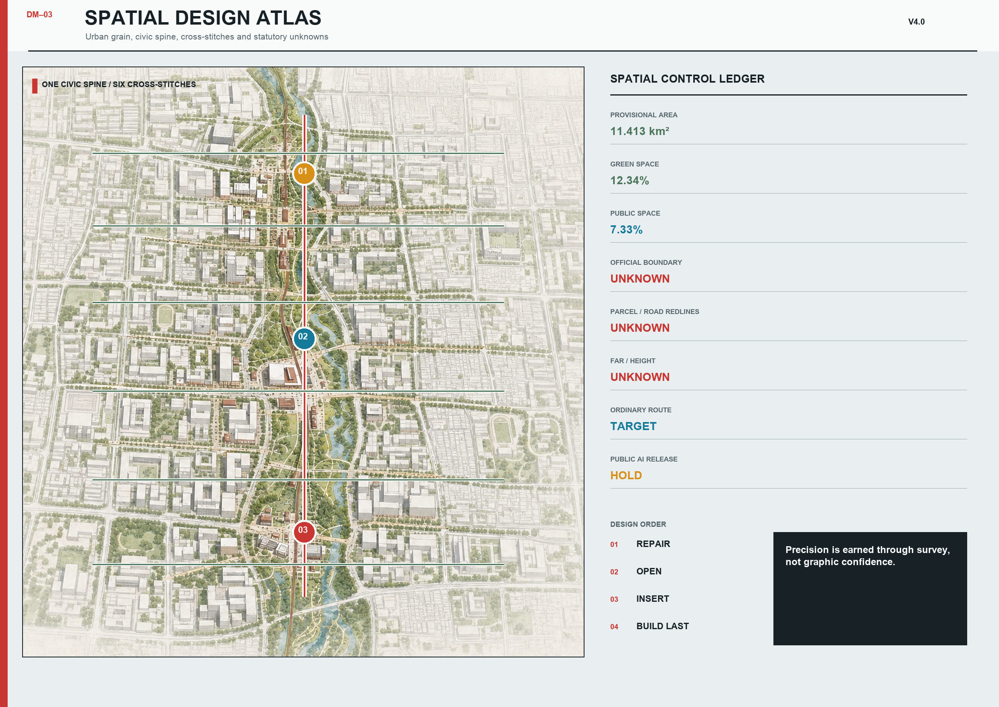

01 / GOVERNANCE AS A DRAWING
Every public-AI component first receives a boundary passport
Public memory
- Rail relics｜durable, correctable
- Oral histories｜rights-cleared, withdrawable
- Model provenance｜public versions and roles
- Failure log｜published beside success
DM—P01 / HOLD
Zhizhiyuan Consent Section
- SPACE
- 60 × 14 m｜four legible boundaries
- DATA
- D0–D3 only; no face ID or silent tracking
- EQUIVALENT
- staffed, account-free continuous route
- STOP
- physical red button + local cut-off + takeover
- EVIDENCE
- ≥5 participants per persona per pilot; route and withdrawal tests pass
HOLDLIMITED RELEASEREVISERETIRE
Personal forgetting
- D0 no collection
- D1 aggregate 90 days
- D2 session 0–7 days
- D3 test event 30 days
- D4 contribution withdrawable

02 / CONSENT IS SPATIAL
Consent is not a checkbox. It is a route one can bypass.
4.0 m NO AI / 2.5 m anonymous assist / 5.0 m controlled test / 2.5 m buffer
Accessible clear width never below 1.8 m; sensors are visible, the stop is legible, and the control kiosk is staffed.
Accessible clear width never below 1.8 m; sensors are visible, the stop is legible, and the control kiosk is staffed.
01Ordinary route 100%no account; never crosses test zone
02Comprehension ≥80%users can explain the active boundary
03Takeover 100%red state restores human service
04Critical issues = 0otherwise default remains HOLD
05Six personasolder, wheelchair, blind, parent, night worker, visitor
06Receipt ≤10 mindeletion, correction, and appeal traceable
03 / IMPLEMENTATION CONTRACT
180 days for the smallest stoppable, testable pilots
WP0 · 0—30
Lock facts
rights, baseline, permit map
WP1 · 31—60
Ordinary first
accessible route and staff SOP
WP2 · 61—90
Bound prototype
passport, stop, withdrawal drill
WP3 · 91—120
Limited window
no more than 20 staffed windows
WP4 · 121—180
Decide + publish
hold / release / revise / retire
¥7.5—13.5M concept bandordinary service + access ≥30% · AI hardware before G3 ≤25% · reserve 10%
04 / MACHINE + HUMAN REVIEW
Coverage and core-metric ticket
11.41 km²provisional overview
12.34%concept green ratio
7.33%concept public-space ratio
Overview mapLand-use zoningMobility + walkingBlue-green public spaceBuildingsRenewal projectsAI scenariosCore metrics
Task coverage · self-check · assumptions
agent.1–agent.6 cover overall concept, ecology, AI+ scenarios, public space, culture, and long-term operation. Deterministic, spatial, visual, and professional-evidence checks must pass. Official boundary, field baselines, rights, utilities, heritage, fire/traffic permits, and operating responsibility remain to be confirmed; metrics support concept recalculation only.
05 / SEVEN-BOARD SET
Complete bilingual submission


